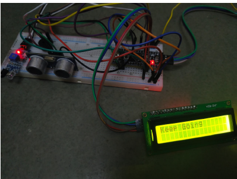

About
I am Tharunkumar R, currently pursuing M.Tech in Embedded Systems at Amrita Vishwa Vidyapeetham. With a background in Electronics and Communication Engineering, I am passionate about designing embedded systems that combine hardware and software to solve real-world engineering problems.
My work focuses on building reliable microcontroller-based systems involving sensing, signal processing, and intelligent control. I enjoy working with platforms such as STM32, ESP32, Arduino, and Raspberry Pi to create practical embedded solutions.
As a person, I consider myself an optimistic learner who enjoys exploring new technologies and improving technical skills continuously. I value collaboration and communication, making me a good listener and team player.
I am comfortable taking initiative when needed and enjoy contributing to projects that require teamwork, leadership, and problem solving. My goal is to develop innovative embedded systems that address real-world challenges in automation, sensing systems, and intelligent devices.
Projects
Vehicle Collision Avoidance System
Designed an embedded collision avoidance system using STM32 with ultrasonic and IR sensors.

- Sensor fusion (Ultrasonic + IR)
- Real-time obstacle detection
- Automatic motor control
Music Genre Classification
Developed a machine learning model capable of classifying music genres using MFCC feature extraction and neural network based learning.
- MFCC feature extraction from audio signals
- Neural network-based classification
- Python, Librosa, TensorFlow
- Multi-class genre prediction
ICU Tele-Monitoring Device
Built a healthcare monitoring system for continuous patient observation and remote monitoring.
- Real-time vital parameter tracking
- IoT-based wireless data transmission
- Alert system for abnormal conditions
- Scalable low-cost healthcare solution
Underwater Orthomosaicking Reconstruction


- Feature detection (ORB/SIFT)
- Homography alignment
- Image stitching & blending